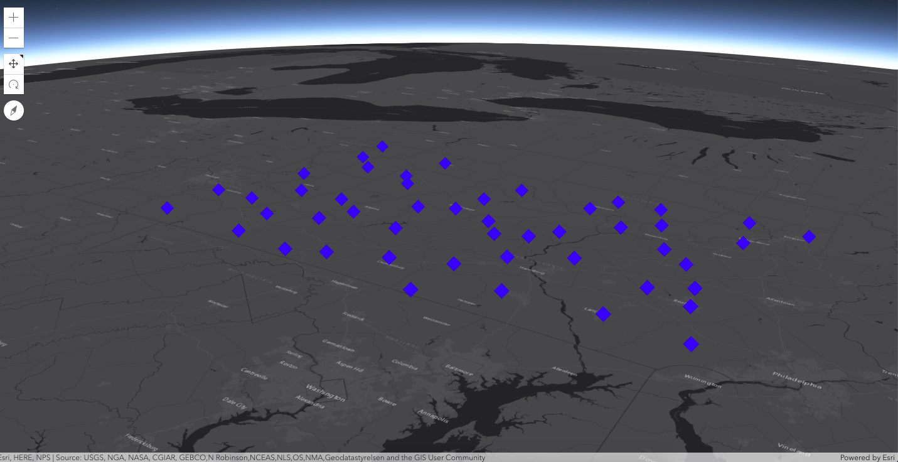
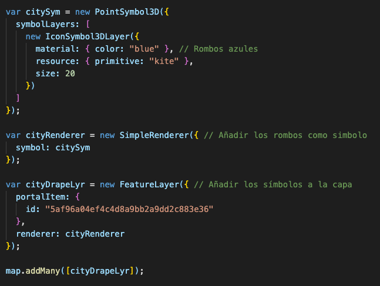
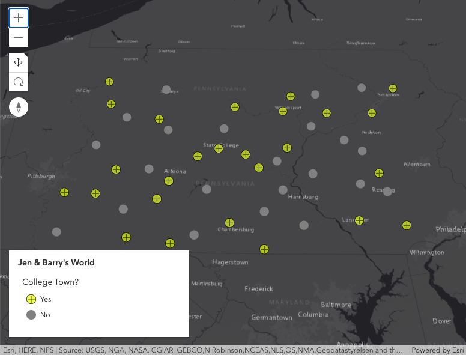
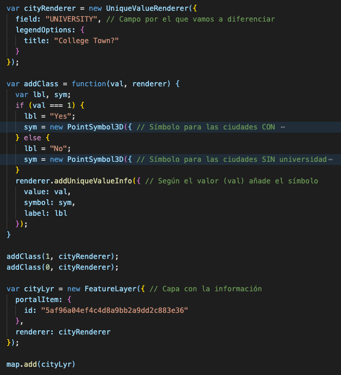
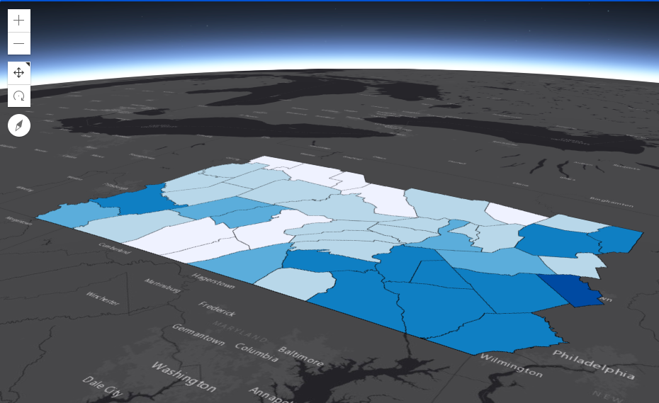
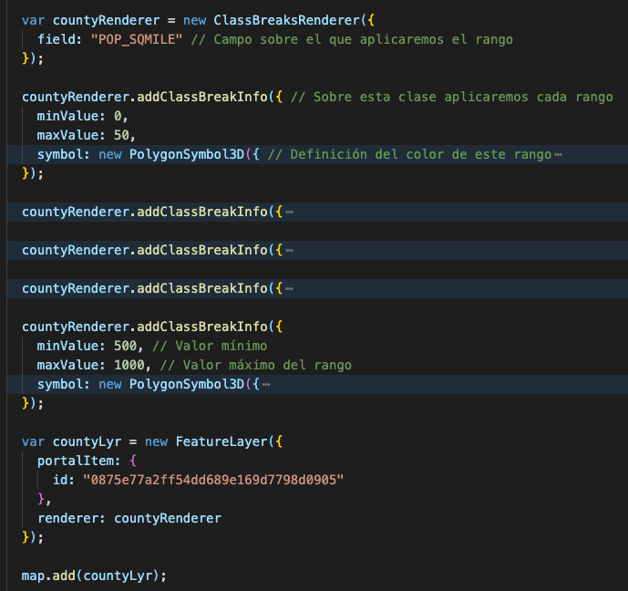

📅 Mayo 2016 → v4.0
📅 Julio 2020 → v4.16
⬆ v3.4
La versión 4 nos permite hacer mapas en 3D pudiendo crear aplicaciones más atractivas y fáciles
Se ha mejorado la lógica de los mapas y las vistas. En la version 3.x la lógica del dibujo eran manejados por las vistas y las capas pero ahora esa lógica se reserva para las vistas.
Contiene la información que utilizaremos para pintar las capas
· SimpleRenderer: Para dar localizaciones.
 🐙🐱· SimpleRenderer:
· UniqueValueRenderer: Para mostrar tipos.
· UniqueValueRenderer:
· ClassBreaksRenderer: Para mostrar rangos.
· ClassBreaksRenderer:
Version 3.x
myFeatureLayer.setDefinitionExpression(expression);Version 4.x
var basemapTitle = map.get("basemap.title");Además de tener eventos ahora también tenemos watchers, es decir, ya no tenemos que establecer todos los eventos sino que podemos simplificarlo con un watcher
var map = new Map({
basemap: 'streets'
});
var handle = map.watch('basemap.title',
function(newValue, oldValue, property, object) {
console.log(
"New value: ", newValue,
"Old value: ", oldValue,
"Watched property: ", property,
"Watched object: ", object);
});